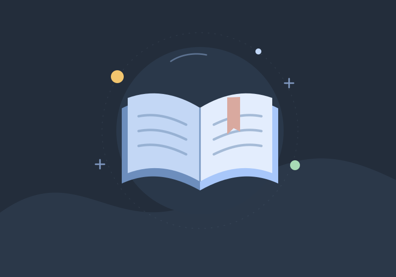

كلمات بسيطة. أثر يبقى.
عن الشغل، والحياة، والحاجات اللي بنتعلمها في الطريق. خد لك قهوة، واقرأ على مهلك.
جرّب كلمة مختلفة أو اختر سنة أخرى.

شكرًا لوقتك. دمتم بخير.
أفكار من الحياة، للحياة.
مساحة بتجمع تدوينات الجمعة من سنة 2015. أفكار وتأملات مكتوبة ببساطة عن الشغل، ومعرفة النفس، والتعلّم من التجارب اليومية.
تقدر تتصفح التدوينات حسب السنة، تدور على فكرة، أو تحفظ اللي يعجبك علشان ترجع له بعدين. المحفوظات بتفضل على المتصفح اللي بتستخدمه.